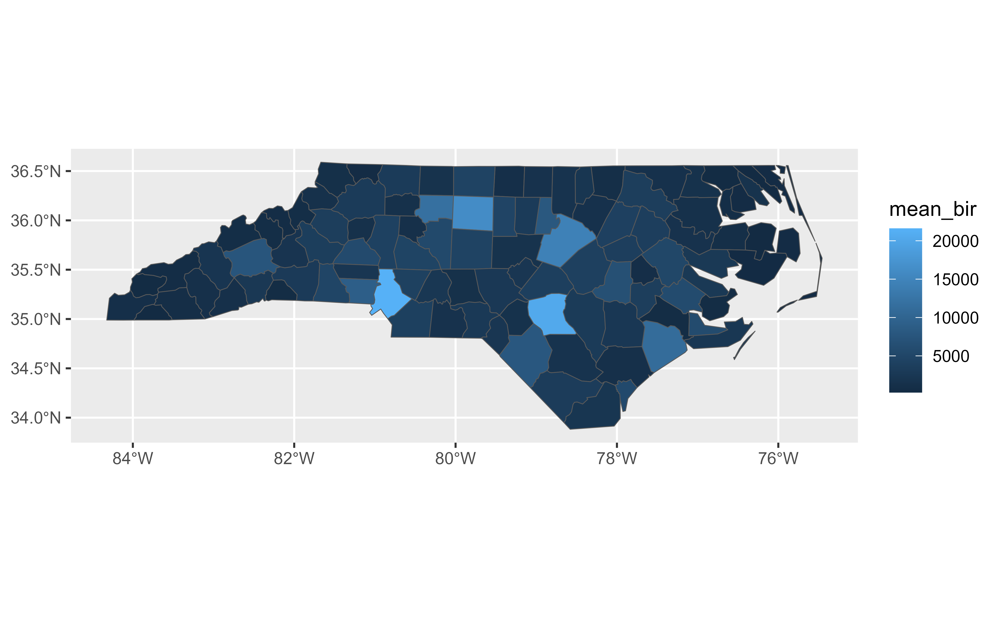
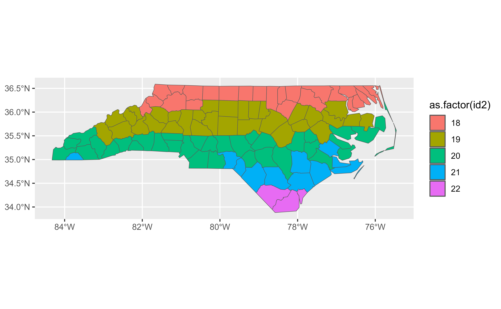

rowwise() allows you to compute on a SpatVector a row-at-a-time.
This is most useful when a vectorised function doesn't exist.
Most dplyr verbs implementation in tidyterra preserve
row-wise grouping, with the exception of summarise.SpatVector(). You can
explicitly ungroup with ungroup.SpatVector() or as_tibble(), or convert
to a grouped SpatVector with group_by.SpatVector().
Usage
# S3 method for class 'SpatVector'
rowwise(data, ...)Arguments
- data
A
SpatVectorobject. See Methods.- ...
<
tidy-select> Variables to be preserved when callingsummarise.SpatVector(). This is typically a set of variables whose combination uniquely identify each row. Seedplyr::rowwise().
Details
See Details on dplyr::rowwise().
Methods
Implementation of the generic dplyr::rowwise() function for
SpatVector objects.
When mixing terra and dplyr syntax on a
row-wise SpatVector (i.e, subsetting a SpatVector like v[1:3,1:2]) the
groups attribute can be corrupted. tidyterra would try to
re-generate the SpatVector. This would be triggered the next time you use
a dplyr verb on your SpatVector.
Note also that some operations (as terra::spatSample()) would create a new
SpatVector. In these cases, the result won't preserve the groups
attribute. Use rowwise.SpatVector() to re-group.
See also
Other dplyr verbs that operate on group of rows:
count.SpatVector(),
group-by.SpatVector,
summarise.SpatVector()
Other dplyr methods:
arrange.SpatVector(),
bind_cols.SpatVector,
bind_rows.SpatVector,
count.SpatVector(),
distinct.SpatVector(),
filter-joins.SpatVector,
filter.Spat,
glimpse.Spat,
group-by.SpatVector,
mutate-joins.SpatVector,
mutate.Spat,
pull.Spat,
relocate.Spat,
rename.Spat,
select.Spat,
slice.Spat,
summarise.SpatVector()
Examples
library(terra)
library(dplyr)
v <- terra::vect(system.file("shape/nc.shp", package = "sf"))
# Select new births
nb <- v %>%
select(starts_with("NWBIR")) %>%
glimpse()
#> # A SpatVector 100 x 2
#> # Geometry type: Polygons
#> # Geodetic CRS: lon/lat NAD27 (EPSG:4267)
#> # Extent (x / y) : ([84° 19' 25.87" W / 75° 27' 25.12" W] , [33° 52' 55.17" N / 36° 35' 22.74" N])
#>
#> $ NWBIR74 <dbl> 10, 10, 208, 123, 1066, 954, 115, 254, 748, 160, 550, 1243, 93…
#> $ NWBIR79 <dbl> 19, 12, 260, 145, 1197, 1237, 139, 371, 844, 176, 597, 1369, 1…
# Compute the mean of NWBIR on each geometry
nb %>%
rowwise() %>%
mutate(nb_mean = mean(c(NWBIR74, NWBIR79)))
#> class : SpatVector
#> geometry : polygons
#> dimensions : 100, 3 (geometries, attributes)
#> extent : -84.32385, -75.45698, 33.88199, 36.58965 (xmin, xmax, ymin, ymax)
#> source : nc.shp
#> coord. ref. : lon/lat NAD27 (EPSG:4267)
#> names : NWBIR74 NWBIR79 nb_mean
#> type : <num> <num> <num>
#> values : 10 19 14.5
#> 10 12 11
#> 208 260 234
# Additional examples
# \donttest{
# use c_across() to more easily select many variables
nb %>%
rowwise() %>%
mutate(m = mean(c_across(NWBIR74:NWBIR79)))
#> class : SpatVector
#> geometry : polygons
#> dimensions : 100, 3 (geometries, attributes)
#> extent : -84.32385, -75.45698, 33.88199, 36.58965 (xmin, xmax, ymin, ymax)
#> source : nc.shp
#> coord. ref. : lon/lat NAD27 (EPSG:4267)
#> names : NWBIR74 NWBIR79 m
#> type : <num> <num> <num>
#> values : 10 19 14.5
#> 10 12 11
#> 208 260 234
# Compute the minimum of x and y in each row
nb %>%
rowwise() %>%
mutate(min = min(c_across(NWBIR74:NWBIR79)))
#> class : SpatVector
#> geometry : polygons
#> dimensions : 100, 3 (geometries, attributes)
#> extent : -84.32385, -75.45698, 33.88199, 36.58965 (xmin, xmax, ymin, ymax)
#> source : nc.shp
#> coord. ref. : lon/lat NAD27 (EPSG:4267)
#> names : NWBIR74 NWBIR79 min
#> type : <num> <num> <num>
#> values : 10 19 10
#> 10 12 10
#> 208 260 208
# Summarising
v %>%
rowwise() %>%
summarise(mean_bir = mean(BIR74, BIR79)) %>%
glimpse() %>%
autoplot(aes(fill = mean_bir))
#> # A SpatVector 100 x 1
#> # Geometry type: Polygons
#> # Geodetic CRS: lon/lat NAD27 (EPSG:4267)
#> # Extent (x / y) : ([84° 19' 25.87" W / 75° 27' 25.12" W] , [33° 52' 55.17" N / 36° 35' 22.74" N])
#>
#> $ mean_bir <dbl> 1091, 487, 3188, 508, 1421, 1452, 286, 420, 968, 1612, 1035, …

# Supply a variable to be kept
v %>%
mutate(id2 = as.integer(CNTY_ID / 100)) %>%
rowwise(id2) %>%
summarise(mean_bir = mean(BIR74, BIR79)) %>%
glimpse() %>%
autoplot(aes(fill = as.factor(id2)))
#> # A SpatVector 100 x 2
#> # Geometry type: Polygons
#> # Geodetic CRS: lon/lat NAD27 (EPSG:4267)
#> # Extent (x / y) : ([84° 19' 25.87" W / 75° 27' 25.12" W] , [33° 52' 55.17" N / 36° 35' 22.74" N])
#>
#> Groups: id2 [2]
#> $ id2 <int> 18, 18, 18, 18, 18, 18, 18, 18, 18, 18, 18, 18, 18, 18, 18, 1…
#> $ mean_bir <dbl> 1091, 487, 3188, 508, 1421, 1452, 286, 420, 968, 1612, 1035, …

# }